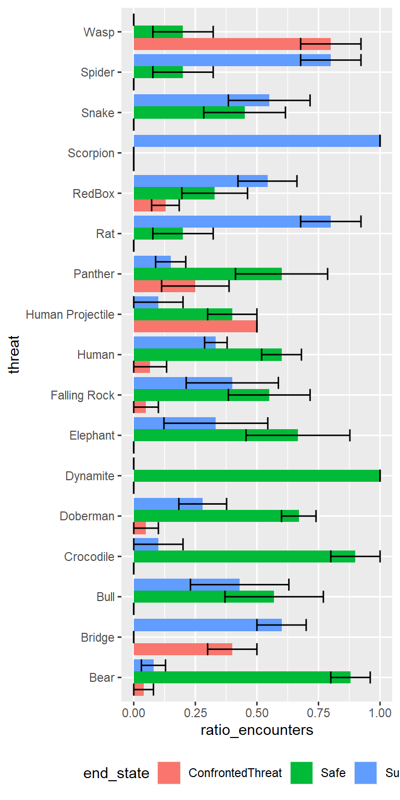
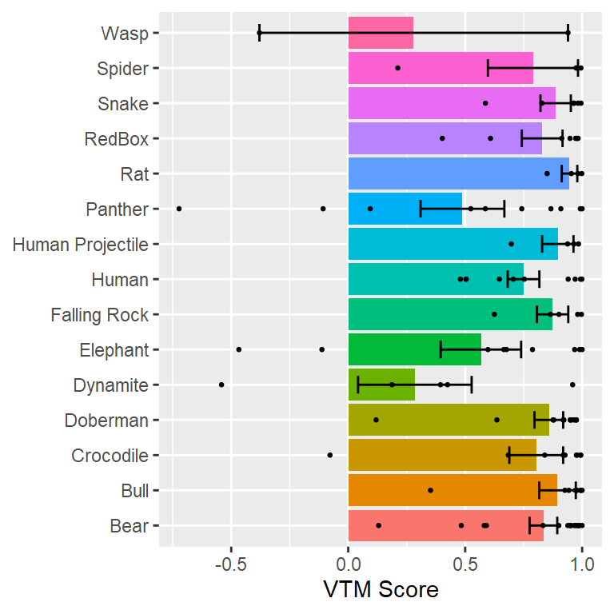

technical-test-exploration.Rmd
library(vrthreat)
library(tidyverse)
#> -- Attaching packages --------------------------------------- tidyverse 1.3.0 --
#> v ggplot2 3.3.2 v purrr 0.3.4
#> v tibble 3.0.4 v dplyr 1.0.2
#> v tidyr 1.1.2 v stringr 1.4.0
#> v readr 1.4.0 v forcats 0.5.0
#> -- Conflicts ------------------------------------------ tidyverse_conflicts() --
#> x dplyr::filter() masks stats::filter()
#> x dplyr::lag() masks stats::lag()
if (!dir.exists("out")) dir.create("out")
if (!dir.exists("out/figs")) dir.create("out/figs")My data are stored in a folder called data. I am also making sure the Knit directory setting in R is set to Project, so that no matter where this document is stored, file access will be done relative to my project.
user_dir <- "data"Read trials
trial_results <- read_trial_results(user_dir, "technical_test") %>%
remove_tutorials() %>%
extract_threat_name() %>%
read_movement_files(user_dir,
c(head_movement_filename, threat_movement_filename)) %>%
read_json_files(user_dir, c(scenario_filename))
trial_outcomes <- trial_results %>%
group_by(ppid, threat, end_state) %>%
summarise(n_trials = n(), .groups = "drop_last") %>%
ungroup() %>%
complete(ppid, threat, end_state, fill = list(n_trials = 0)) %>%
group_by(ppid, threat) %>%
mutate(ratio_encounters = n_trials / sum(n_trials))
ggplot(trial_outcomes, aes(x = threat, y = ratio_encounters, fill = end_state)) +
stat_summary(geom = "col",
fun.data = mean_se,
position = position_dodge(width = 0.9)) +
stat_summary(geom = "errorbar",
fun.data = mean_se,
position = position_dodge(width = 0.9)) +
expand_limits(y = c(0, 1)) +
theme(legend.position = "bottom") +
coord_flip() +
ggsave("out/figs/endstate.png", type = "cairo", dpi = 600, width=4, height=8)
Get safe trials, guess the begin escape time, classify VTM.
trials_vtm <- trial_results %>%
filter(end_state == "Safe") %>%
rowwise() %>%
mutate(
begin_escape_time =
guess_move_from_fruit_time(find_fruit_position(scenario_data),
head_movement_data),
vtm = classify_vtm(
head_movement_data,
threat_movement_data,
find_fruit_position(scenario_data),
min_time = begin_escape_time,
max_time = end_time - 2.0
)
)Plot VTM score on graph.
ggplot(trials_vtm, aes(x = threat, y = vtm$threat_ratio, fill = threat)) +
stat_summary(geom = "col",
fun.data = mean_se,
position = position_dodge(width = 1)) +
stat_summary(geom = "errorbar",
fun.data = mean_se,
width = 0.5,
position = position_dodge(width = 1)) +
geom_point(size = .5) +
labs(x = NULL, y = "VTM Score") +
scale_fill_discrete(guide = FALSE) +
coord_flip() +
ggsave("out/figs/vtm.png", type = "cairo", dpi = 600, width = 4, height = 4)
#> Warning: Removed 5 rows containing non-finite values (stat_summary).
#> Warning: Removed 5 rows containing non-finite values (stat_summary).
#> Warning: Removed 5 rows containing missing values (geom_point).
#> Warning: Removed 5 rows containing non-finite values (stat_summary).
#> Warning: Removed 5 rows containing non-finite values (stat_summary).
#> Warning: Removed 5 rows containing missing values (geom_point).